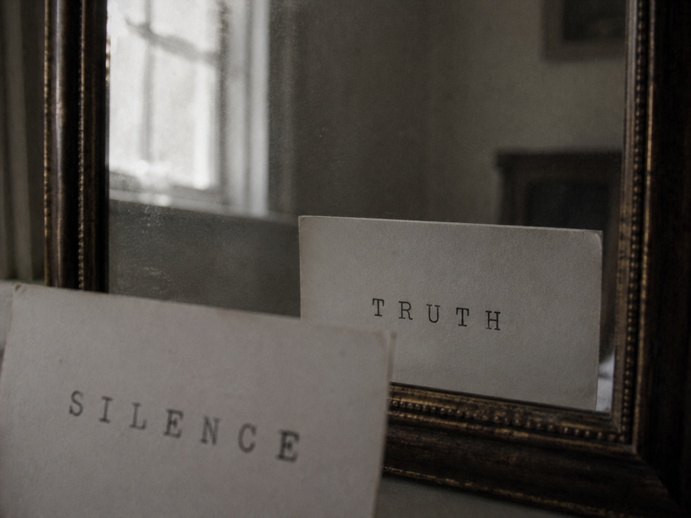

··································
· D E S C E N T · 39 / 40 ·
··································

That witness is you.
You carried it all the way up.
One last step. The word for what survives —
what you raise to this mirror comes back as its far opposite: the first answering for the last, and the last for the first.
the wax for the next door: ·pw·
[ press any key · sound ]
someone saw all of this. that is what witness means.